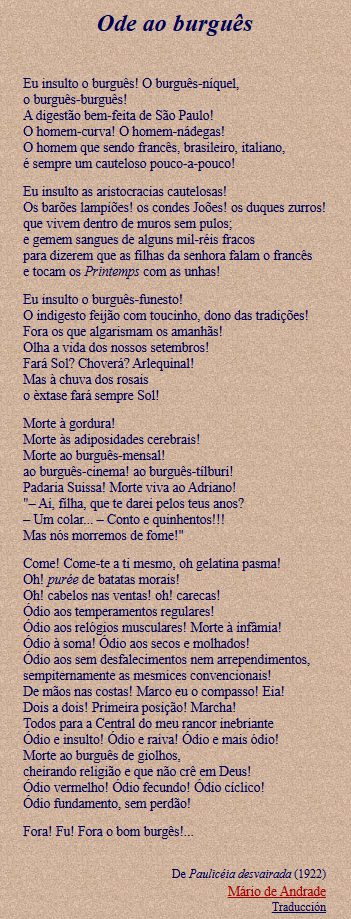

Imagem gerada pelo GEMINI

Publicada in 1922, Paulicéia Desvairada é considerada a primeira obra de vanguarda do modernismo brasileiro. O livro rompeu com o formalismo tradicional ao introduzir o uso de versos livres e uma linguagem que capturava a urbanização acelerada de São Paulo. No seu 'Prefácio Interessantíssimo', Mário estabelece as bases do Desvairismo, defendendo a liberdade de criação e zombando da própria arte para romper os limites entre a seriedade e a piada.
Escolhemos este poema por representar o ápice do confronto dramático do período. Nele, Mário utiliza uma estética expressionista para deformar e insultar a hipocrisia da elite paulistana, utilizando expressões como 'homem-nádegas' e 'morte à gordura'. A leitura deste texto durante a Semana de Arte Moderna, sob fortes vaias, exigia uma performance que o autor definiu como um 'urro', simbolizando a agressividade necessária para o nascimento da nova arte

Imagem gerada pelo GEMINI
Definida como uma rapsódia, a obra-prima de 1928 funde lendas indígenas, folclore e a realidade urbana para 'inventar' o Brasil. O livro acompanha a jornada de Macunaíma, o 'herói sem nenhum caráter', que personifica a identidade híbrida e as contradições do povo brasileiro. A obra é um marco das pesquisas linguísticas de Mário, que buscou elevar o 'brasileiro falado' ao status de literatura erudita, fundindo falares de diversas regiões em um projeto de desgeograficação cultural.
Selecionamos esta passagem por seu caráter romântico e simbólico. Nela, narra-se o encontro de Macunaíma com Ci, líder das Icamiabas e seu 'único amor'. Após a perda trágica de um filho e a subida de Ci ao céu para tornar-se estrela, ela deixa para o herói a muiraquitã, um amuleto de pedra verde. A perda subsequente deste talismã mergulha o herói em uma profunda saudade, sentimento que atua como o motor emocional que impulsiona suas aventuras em São Paulo para recuperar a lembrança de seu amor perdido.
"Macunaíma escoteiro topou com uma cunhã dormindo. Era Ci, Mãe do Mato. Logo viu pelo peito destro seco dela, que a moça fazia parte dessa tribo de mulheres sozinhas parando lá nas praias da lagoa Espelho da Lua, coada pelo Nhamundá. A cunhã era linda com o corpo chupado pelos vícios, colorido com jenipapo. Macunaíma ficou espiando. Teve desejo."
"Mas Ci acordou e num abrir d’olhos enxergou o herói. Deu um grito de guerra, bateu na boca e pulou em cima de Macunaíma. Mas que braço! Era a Mãe do Mato. Macunaíma lutou capoeira, rasteira, negaça, canutilho, mas Ci era mais forte. Derrubou o herói, amarrou ele bem amarrado com cipó-titica e já ia dar o sumiço no infeliz quando Maanape e Jiguê chegaram pra acudir o mano."
"Bateram os dois na cunhã. Maanape segurava a cabeça e Jiguê batia. Bateram de porrete, de canela de ema, de sapopema, de pau-santo, de canela-preta, bateram. Ci caiu desmaiada. Macunaíma desamarrou os cipós e pulou na cunhã. Brincaram."
"Vieram então muitas jandaias, muitas araras vermelhas tuins coricas periquitos, muitos papagaios saudar Macunaíma, o novo Imperador do Mato-Virgem."